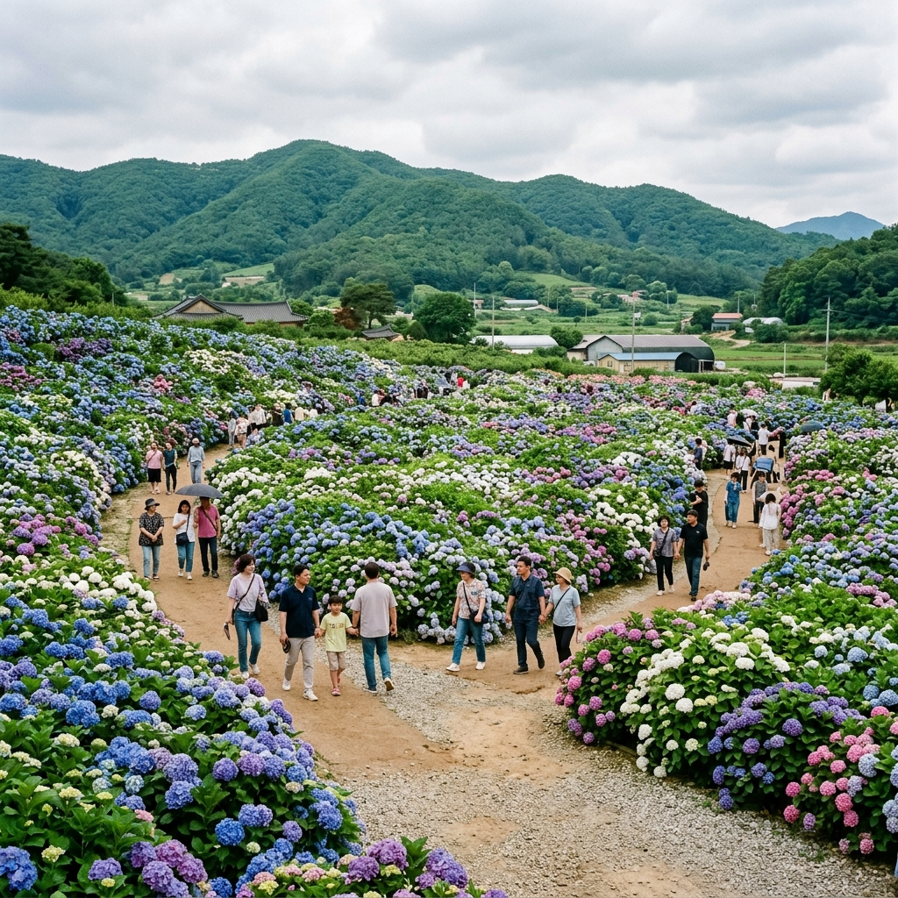
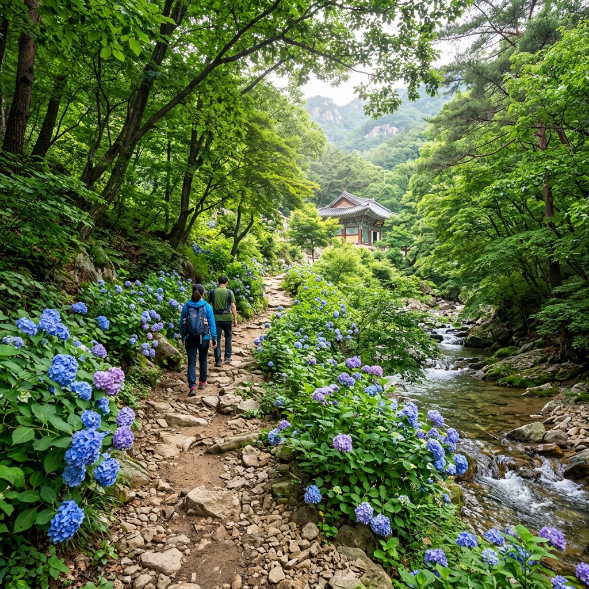
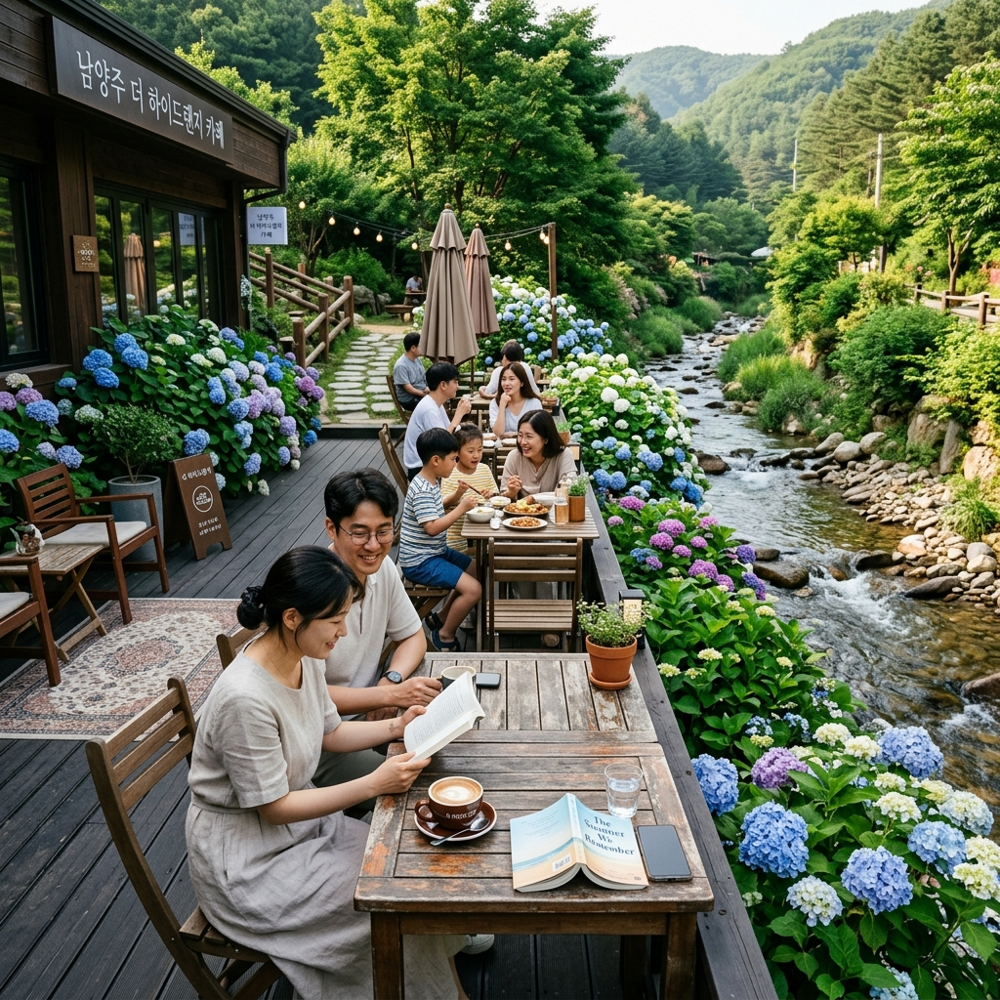

양주·남양주 수국 명소 — 수도권 주말 수국 나들이 당일 코스
📍 핵심 요약
6월 수국을 보기 위해 꼭 멀리 제주나 거제까지 가야 하는 것은 아닙니다. 서울에서 1시간 내외의 양주와 남양주에도 훌륭한 수국 명소들이 있습니다.
양주 나리농원과 남양주 천마산·묘적사 일대는 수도권 수국 나들이의 숨은 보석입니다.
이 글에서는 양주에서 남양주까지 이어지는 당일 수국 드라이브 코스, 최적 방문 시기, 주변 카페·맛집 정보를 정리해 드립니다.
① 수도권에서 만나는 수국, 양주·남양주가 뜨는 이유
6월 수국 여행 검색어에서 제주나 남해안이 압도적이지만, 정작 수도권 거주자들 사이에서는 양주와 남양주가 조용히 인기를 끌고 있습니다.
가장 큰 이유는 접근성입니다. 서울 강북·노원·의정부 지역에서 양주까지는 자가용으로 40분~1시간이면 닿습니다. 남양주 천마산 지역도 서울 청량리에서 1시간 이내 거리입니다.
또 하나의 이유는 다양한 볼거리의 조합입니다. 양주는 나리농원이라는 대규모 꽃밭을 중심으로 수국·양귀비·네모필라 등 계절화가 연달아 피어나는 곳으로 이미 수도권 나들이 명소로 자리를 잡았습니다. 남양주는 산과 계곡, 카페촌이 어우러져 수국 감상 이후 여러 즐길거리를 이어갈 수 있습니다.
멀리 가지 않고도 6월의 절정 수국을 즐길 수 있다는 것이 양주·남양주 코스의 가장 큰 매력입니다.
② 양주 나리농원 6월 수국 — 규모와 포인트
양주 나리농원(경기 양주시 삼숭동 일원)은 5월~6월 하순에 걸쳐 수국·양귀비·네모필라 등 다양한 꽃을 즐길 수 있는 대형 꽃밭입니다.
6월 초중순에 접어들면 양귀비와 네모필라가 서서히 물러나고, 수국이 넓은 밭 곳곳에 피어오르기 시작합니다.
나리농원의 수국은 정형화된 화단이 아닌, 자연스럽게 군락을 이루는 방식으로 조성되어 있어 야생화 느낌을 줍니다. 파란색·보라색·흰색 수국이 섞여 큰 군락을 이루며, 농원 전반에 걸쳐 산책하며 감상할 수 있는 구조입니다.
나리농원 방문 시 알아둘 점: 입장료는 성인 기준으로 꽃 시즌에 소액을 받는 형태로 운영됩니다(실제 요금은 방문 전 공식 SNS 또는 현장 확인 권장). 넓은 밭을 걸어 다녀야 하므로 편한 운동화와 물을 챙겨가는 것이 좋습니다.

양주 나리농원 6월 수국 군락 / AI 제작 이미지
③ 남양주 천마산·묘적사 수국 트레킹 코스
남양주 천마산(812m)은 수도권 대표 트레킹 코스 중 하나입니다. 6월이 되면 천마산 자락과 산중턱 사찰인 묘적사 주변에 수국이 피어나 트레킹에 색깔을 더합니다.
묘적사(경기 남양주시 화도읍)는 신라 시대 창건된 오래된 사찰로, 천마산 중턱에 자리해 사찰 자체보다는 사찰 주변의 자연 경관과 계곡이 더 유명한 곳입니다.
6월에 묘적사 방향 등산로를 오르다 보면 길 옆으로 자생하는 수국과 야생화를 만날 수 있습니다. 특히 계곡 따라 오르는 초반 구간에 수국이 집중적으로 피어납니다.
묘적사 트레킹 코스:
천마산 주차장 → 묘적사(약 2km, 50분) → 천마산 정상(묘적사에서 추가 1.5시간) 또는 원점 회귀
묘적사까지만 오르고 내려오는 코스도 충분히 아름답습니다. 왕복 1시간 40분 내외로 부담 없이 다녀올 수 있습니다.
④ 수국 절정 시기와 최적 방문 타이밍
양주·남양주의 수국은 서울 기준 6월 중순~하순이 절정입니다.
나리농원과 천마산 묘적사 모두 해발이 높지 않아 6월 초에도 수국이 피기 시작하지만, 꽃이 가장 풍성한 것은 6월 15일~25일 사이가 많습니다.
💡 최적 방문 타이밍 팁: 6월 15일 이후 주중 오전(화·수·목) 방문이 가장 여유롭습니다. 주말에는 나리농원 주차장이 만차가 되는 경우가 많아 오전 9시 이전 도착이 필요합니다.
수국은 비가 온 다음 날 가장 생생하게 빛납니다. 예보를 확인해 비 다음 날 맑은 오전에 방문하면 최고의 컨디션을 만날 수 있습니다.
절정 이후에도 수국은 꽃잎이 갈변하기 전까지 2~3주 정도 감상이 가능합니다. 6월 말~7월 초에도 충분히 즐길 수 있습니다.
⑤ 양주에서 남양주까지 — 당일 드라이브 코스 설계
양주와 남양주를 하루에 모두 돌아보는 당일 코스를 소개합니다.
추천 당일 코스 (서울 출발 기준)
① 오전 8:30 — 서울 출발
② 오전 9:30 — 양주 나리농원 도착 및 수국 감상 (약 2시간)
③ 오전 11:30 — 양주 시내 또는 나리농원 인근 카페에서 점심
④ 오후 1:00 — 양주~남양주 이동 (43번 국도 또는 국도 47호, 약 40분)
⑤ 오후 2:00 — 남양주 천마산 묘적사 트레킹 (왕복 약 2시간)
⑥ 오후 4:00 — 남양주 카페거리(삼봉리·수동 일대) 방문
⑦ 오후 5:30 — 귀가 출발
이 코스는 약 90km의 이동 거리로, 고속도로를 경유하면 더 빠르게 이동할 수 있습니다. 체력에 따라 묘적사 트레킹을 생략하고 카페 방문으로 대체하는 것도 좋습니다.

남양주 천마산 수국 산책로 / AI 제작 이미지
⑥ 수국 인생샷 명당 — 어디서 찍어야 인스타 감성
양주·남양주 수국 인생샷을 위한 포인트를 구체적으로 정리합니다.
나리농원 인생샷 포인트:
- 수국 군락의 중앙 통로: 좌우로 수국이 도열한 꽃길 터널 효과
- 농원 언덕 위 조망 포인트: 수국 군락 전체와 배경 산을 한 컷에
- 흰색 수국 군락 구역: 깨끗한 배경의 단아한 사진을 원한다면 이 구역 추천
묘적사 인생샷 포인트:
- 계곡 돌다리와 수국: 계곡 위 작은 다리를 건너는 컷이 가장 인기
- 사찰 돌담과 수국: 전통 석조 담장 아래 피어난 수국의 대비감
- 등산로 초반 계곡 구간: 물소리 배경으로 촬영하면 청량감이 더해짐
스마트폰으로 찍을 때는 인물 모드(Portrait Mode)로 찍으면 수국이 배경이 되어 자연스러운 인물 사진이 완성됩니다.
⑦ 주변 카페·맛집 — 나들이 완성하는 먹거리
양주와 남양주 모두 수도권 근교 카페촌으로 유명한 지역입니다.
양주 카페: 나리농원 인근 도로변에 대형 뷰 카페들이 들어서 있습니다. 창문 너머로 꽃밭과 산을 바라보며 커피 한 잔 마시는 것이 이 지역 나들이의 공식 코스가 되었습니다.
남양주 수동·삼봉리 카페거리: 계곡을 옆에 두고 조성된 카페들이 많습니다. 6월에는 계곡물 소리와 함께 수국을 감상할 수 있는 야외 좌석이 있는 카페를 찾는 것이 포인트입니다.
맛집: 남양주 수동면 일대에는 오리구이·닭볶음탕 전문점들이 많아 트레킹 후 든든한 식사를 즐기기 좋습니다. 양주 쪽에서는 파주·의정부 방향의 부대찌개 식당들도 가까운 편입니다.
⑧ 교통·주차 정보 (양주·남양주 수국지 공통)
| 구분 |
양주 나리농원 |
남양주 천마산 |
| 서울에서 거리 |
약 40~50분 (39번 국도) |
약 45~60분 (46번 국도) |
| 주차 |
농원 내 주차장 (유료/소액) |
천마산 등산로 입구 공영주차장 |
| 대중교통 |
1호선 의정부역 → 양주 방면 버스 |
경춘선 마석역 → 마을버스 또는 택시 |
| 입장료 |
꽃 시즌 소액 (현장 확인) |
무료 (묘적사 입장료 별도 확인) |
⑨ 수도권 수국 더 즐기기 — 인근 연계 명소
양주·남양주와 같은 날 연계할 수 있는 수도권 수국 추가 명소를 소개합니다.
광릉수목원(국립수목원): 남양주 진접읍에 위치한 유네스코 생물권보전지역으로, 6월에는 수목원 곳곳에 다양한 식물과 함께 수국이 피어납니다. 입장은 온라인 사전 예약 필수입니다.
가평 자라섬: 남양주에서 가평으로 이동하면 자라섬 꽃 페스타와 연계할 수 있습니다. 양주~남양주~가평으로 이어지는 북한강 드라이브 코스가 완성됩니다.
포천 국립수목원 인근 허브아일랜드: 포천 허브아일랜드에서도 6월 라벤더·수국을 함께 감상할 수 있어, 양주에서 포천까지 이어지는 코스도 인기입니다.

남양주 계곡 뷰 카페와 수국 풍경 / AI 제작 이미지
⑩ 6월 수국 여행 준비물과 주의사항
수도권 수국 나들이를 앞두고 꼭 챙겨야 할 준비물과 주의사항을 정리합니다.
준비물:
- 자외선 차단제와 선글라스 (6월 자외선 강함)
- 물 1.5L 이상 (트레킹 포함 시 더 넉넉히)
- 편한 운동화 (나리농원 밭 걷기·천마산 산책 모두 해당)
- 카메라 또는 스마트폰 보조 배터리
- 접이식 우산 (6월 갑작스러운 소나기 대비)
주의사항:
수국 군락에서 꽃잎을 꺾거나 군락 안으로 들어가는 행위는 삼가세요. 수국은 다음 해에도 같은 자리에서 피어나야 하는 다년생 식물입니다. 사진을 위해 꽃잎을 꺾거나 군락에 들어가는 것은 다음 방문자에 대한 배려가 없는 행동입니다.
수국 절정기 주말에는 양주·남양주 일대 도로가 평소보다 많이 막힐 수 있습니다. 시간적 여유를 넉넉히 두고 출발하세요.
멀리 가지 않아도 가까운 양주·남양주에서 6월 수국의 아름다움을 충분히 누릴 수 있습니다. 이번 주말, 서울 근교 수국 드라이브를 계획해 보시길 권합니다.
#양주수국
#남양주수국
#나리농원수국
#수도권수국
#천마산수국
#6월주말나들이
#수도권꽃여행
#경기도수국
#주말나들이
#수국드라이브